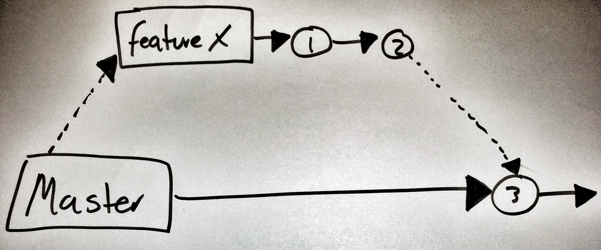

class: center, middle, inverse # Feature Toggles #### en enkel teknikk for å levere funksjonalitet enda raskeres ### Ivar Conradi Østhus <table class="bottom"> <tr> <td class="rightify"><img src="images/twitter.png" height="20" /></td> <td class="leftify strong">@ivarconr</td> </tr> <tr> <td class="rightify"><img src="images/finn.png" height="20" /></td> <td class="leftify strong">ico@finn.no</td> </tr> </table> --- class: background-img # master branch => motorvei til produksjon <img src="images/highway.jpg"> ??? - I FINN har vi optimaliser infrastrukturen for å får kode til prduksjon - Master branchen (for de fleste applikasjoner) som motorvei til produskjon - Ruller ut artifakter flere ganger daglig - Kode som sjekkes inn her vil - bli bygget og tester kjøres - automatisk bli deployet til testmiljøer - integrasjonstester blir trigget - Det betyr at det som sjekkes inn på master skal potensielt kunne havne i produksjon. --- # Utfordinger - Optimalisert for å få ut små endringer / bugfixes - Det tar tid å utvikle nye funksjoner (1-3 uker) - flere personer og team - flere moduler/applikasjoner - Det tar tid fra kode commites til det kan deplyes i prod --- # Feature Branches  - En enkel teknikk der vi benytter egene feature branches til å utvikle ny funksjonalitet - Merges inn til når funksjonen er klar --- # Feature Branches: paralelle features <img class="fullwitdh border" src="images/feature_branch_double.jpg" /> --- # Feature Branches: oppsummert Fordeler: - Ingen kode havner i prod før vi er klar - lett å teste ulik kode / en annen måte å gjøre ting på - code review med pull-requests / merges Ulemper: - "merge-hell" - frykt for å refaktorere felleskode / rammeverk / bibliotek - vanskelig å dele __ny__ kode på tvers av brancher - kan ikke teste ny kode før den er klar --- # Continous Integration - unngå big bang merges - hva betyr det? - integrere kode med master kontinuerlig - all kode som sjekkes inn er "produksjonsklar" - kjøre tester, enhetstester, integrasjonstester, manuell testing? - Er alle testmiljøene helt like som produksjon? ulemper: - uferdige funksjoner kan havne i produksjon - blir skummelt å sjekke inn kode --- class: background-img # Feature Toggles <img src="images/Merrydown_Cider Factory.jpg"> --- # Feature Toggles - simple if statements - hides certain execution paths - allows developers to release a version of a product that has unfinished features - This allows many small incremental versions of software to be delivered without the cost of constant branching and merging. --- # Feature Toggles: klassifisering - Operational Toggles - Temporary Code Toggles - Permanent Code Toggles - Business Toggles --- # Anbefalt arbeidsflyt - Lokale brancher - Feature toggle dersom ikke ferdig innen en dag - Når funksjon er ferdig, skru den på for team/testere i alle miljøer. - Dersom funksjonen virker, skru den gradvis på for brukerene dine i produksjon - Oppdages feil? Vurder alvorlighet -> skru den av, implementer fiks og skur på funksjonen igjen --- # Featur toggles oppsummert - Unngår "major merges" - Lar oss rulle ut funksjoner før de er helt ferdig - Lar oss teste tidlig i produksjon - Økt kontroll med når en ny funksjon aktiveres - Lett å rulle tilbake nye funksjoner